Tư thế
50 tư thế yoga cùng gạch tập cho các bé

Gạch yoga (yoga block) là “người bạn nhỏ” giúp bé làm được những tư thế mà tay chưa với tới hay chân chưa đủ dẻo. Thay vì cố quá sức, bé có một “bậc thang” để chống tay, để ngồi, để kẹp. Bé thấy mình làm được nên tự tin và thích tập hơn. Dưới đây là 50 tư thế chụp ngay trong lớp yoga trẻ em của cô Sophia, mỗi tư thế có một cái tên thật ngộ nghĩnh để bé nhớ lâu và cách kê gạch kèm theo.
💡 Cách dùng bài này: tư thế xếp theo thứ tự một buổi tập: đứng, ngồi, nằm thư giãn, cuối cùng là yoga đôi cùng cô. Ô 🧱 màu cam chỉ cách dùng gạch. Mỗi tư thế giữ 3 đến 5 hơi thở, đọc to câu hô 🗣️ để bé nhập vai. Tên tiếng Anh để thầy cô dạy song ngữ.
Gạch yoga có 3 độ cao
Một viên gạch xoay được 3 cách, nên có 3 độ cao. Người lớn nói “gạch nằm, gạch nghiêng, gạch đứng” để bé dễ nhớ.
Gạch nằm
Thấp nhất. Để ngồi lên, kê dưới gối.
Gạch nghiêng
Vừa. Để chống tay khi cúi người.
Gạch đứng
Cao nhất. Cho bé mới tập, tay chưa với tới.
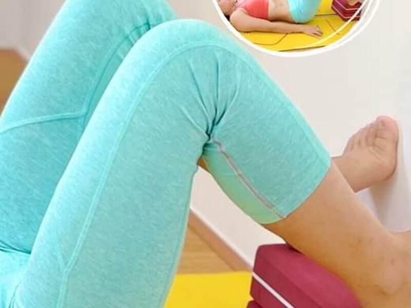
Cô Sophia cũng dùng gạch hằng ngày, ví dụ chồng hai viên để kê chân khi tập. Với bé, chọn gạch xốp EVA nhẹ, mềm, góc bo tròn (khoảng 200 đến 300 gram). Tránh gạch gỗ hay gạch bần nặng vì bé dễ làm rơi vào chân. Mỗi bé nên có 2 viên.
🌟 Phần 1: Đứng, thăng bằng và chống tay
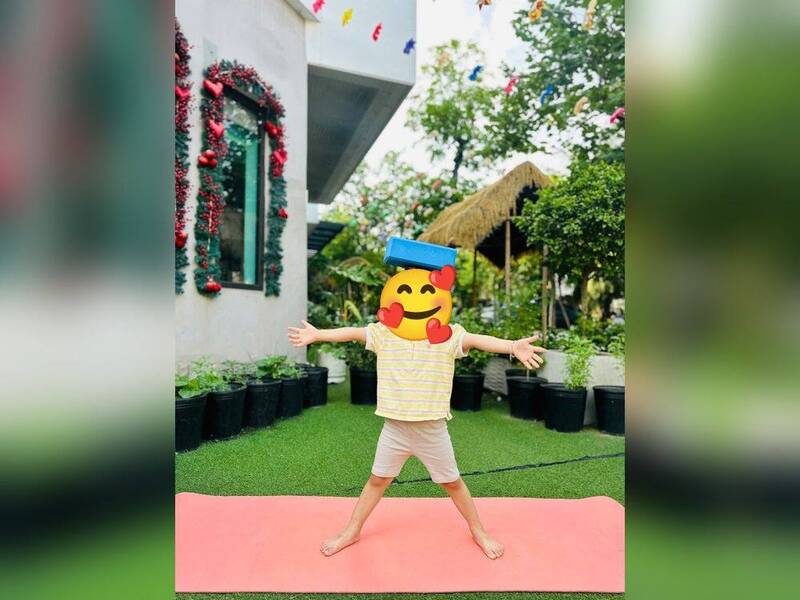
Ngôi sao đội mũ
Star pose, block on head
Cách làm: Đứng dang rộng hai chân, hai tay dang ngang thật thẳng như năm cánh sao.
🧱 Dùng gạch: Đặt một viên gạch nằm lên đỉnh đầu. Bé phải giữ cổ và lưng thật thẳng thì “mũ” mới không rơi.
🗣️ “Ngôi sao đội mũ xanh, đứng thật thẳng kẻo rơi mũ nhé!”
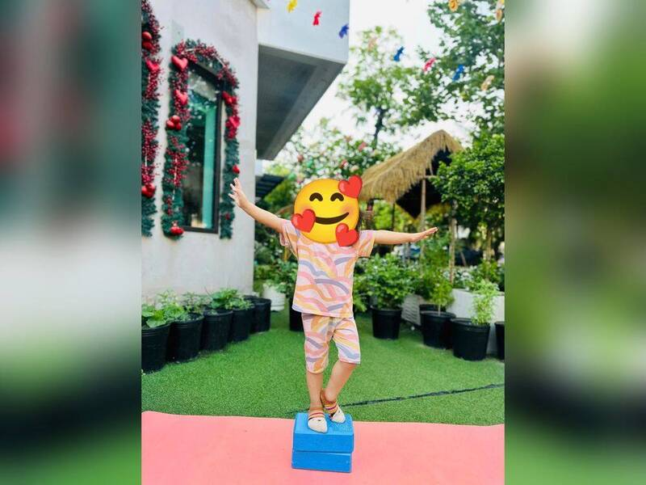
Cò con đứng mỏm đá
Tree pose on blocks
Cách làm: Đứng trên gạch, một bàn chân đặt lên cổ chân kia, hai tay dang rộng giữ thăng bằng.
🧱 Dùng gạch: Hai viên gạch nằm chồng lên nhau làm “mỏm đá”. Bé mới tập thì đứng trên một viên, có người lớn đứng cạnh.
🗣️ “Cò con đứng trên mỏm đá, gió thổi cũng không sợ!”
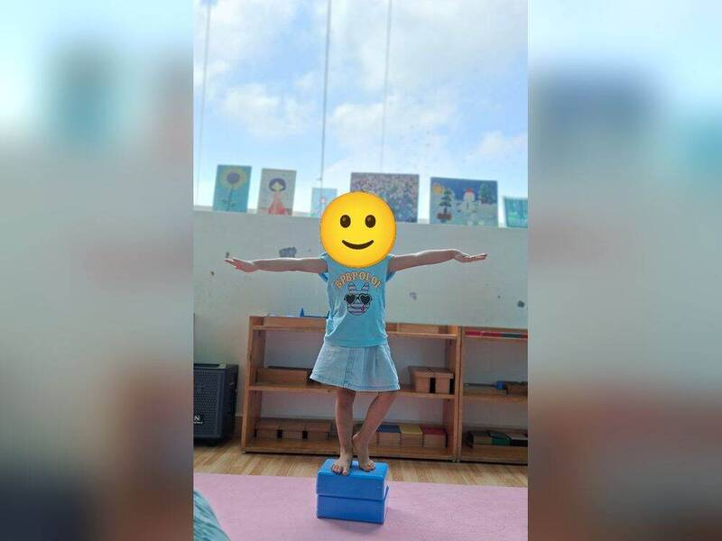
Máy bay trên tháp canh
Airplane balance on blocks
Cách làm: Đứng hai chân trên gạch, kiễng nhẹ một gót, hai tay dang ngang như đôi cánh máy bay.
🧱 Dùng gạch: Hai viên gạch nằm chồng, đặt giữa thảm chống trơn. Bé nhìn một điểm cố định phía trước để đứng vững.
🗣️ “Máy bay chuẩn bị cất cánh, cánh thật thẳng nào!”
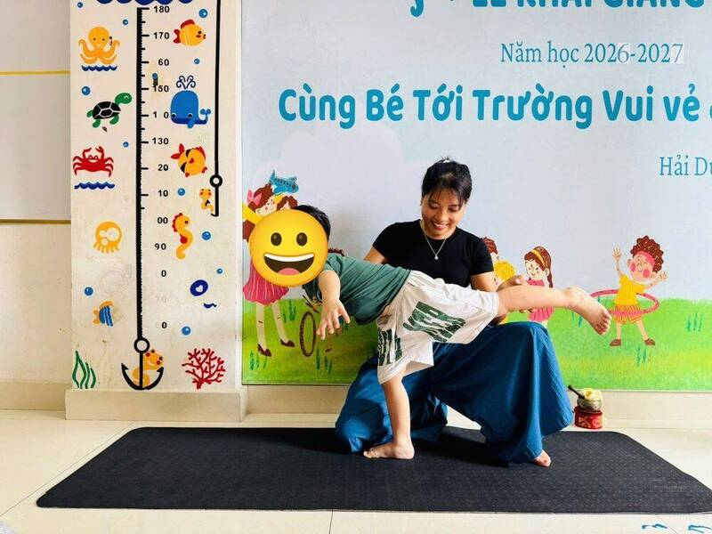
Máy bay cất cánh
Airplane pose (Warrior 3), assisted
Cách làm: Đứng một chân, nghiêng người về trước, chân sau nâng cao, hai tay dang như cánh. Cô quỳ phía sau đỡ hông cho bé.
🧱 Dùng gạch: Bé tự tập thì đặt hai viên gạch đứng phía trước, hai tay chống lên gạch thay cho đôi cánh.
🗣️ “Vù… máy bay cất cánh bay qua đám mây!”
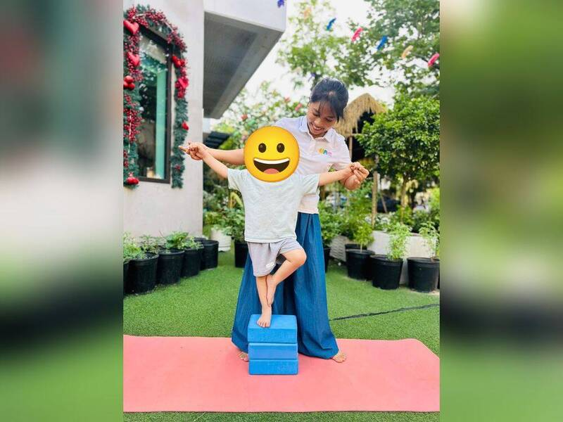
Cây non trên đồi cao
Tree pose on stacked blocks
Cách làm: Đứng một chân trên chồng gạch, chân kia gập lại đặt vào bắp chân. Cô đứng phía sau nắm tay bé dang rộng.
🧱 Dùng gạch: Ba viên gạch nằm chồng làm “ngọn đồi”. Chồng gạch cao chỉ dùng khi có cô đỡ tay.
🗣️ “Cây non trên đồi cao, rễ bám thật chặt!”
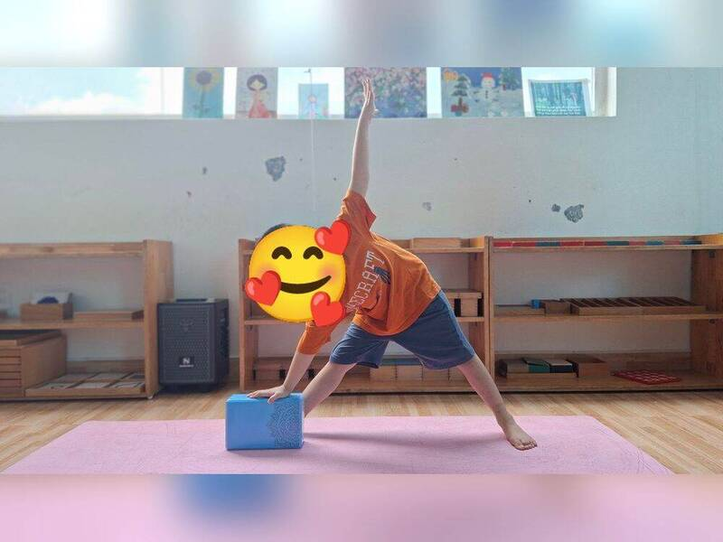
Cánh buồm tam giác
Triangle pose with block
Cách làm: Dang rộng hai chân, mũi chân trước xoay ra ngoài. Nghiêng người xuống, một tay đặt lên gạch, tay kia vươn thẳng lên trời.
🧱 Dùng gạch: Gạch đứng đặt phía trong bàn chân trước. Tay chưa chạm tới thì giữ gạch đứng, dẻo hơn thì đổi sang gạch nghiêng.
🗣️ “Cánh buồm căng gió, tay chạm trời xanh!”
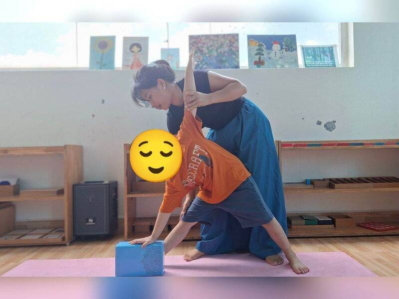
Thuyền buồm có gió đẩy
Triangle pose, assisted
Cách làm: Làm như cánh buồm tam giác. Cô đứng sau, giữ cánh tay trên của bé để ngực mở ra và lưng không gù.
🧱 Dùng gạch: Gạch đứng dưới bàn tay. Cô nhắc bé “ấn nhẹ tay xuống gạch” để người vươn dài.
🗣️ “Gió đẩy buồm căng, thuyền lướt thật xa!”
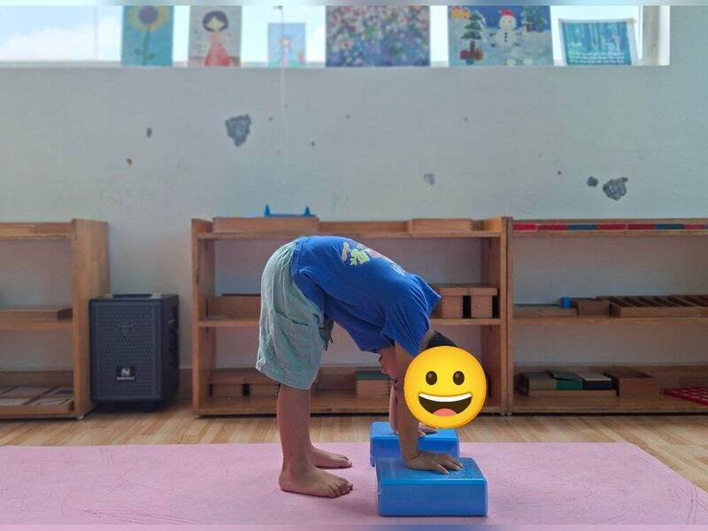
Thác nước đổ xuống
Standing forward fold, hands on blocks
Cách làm: Đứng chân rộng bằng hông, gập người từ hông, hai tay chống xuống, đầu thả lỏng như dòng thác.
🧱 Dùng gạch: Hai viên gạch nằm chồng trước mũi chân để bé chống tay, không phải cố với xuống sàn.
🗣️ “Thác nước chảy róc rách, đầu thả lỏng nào!”
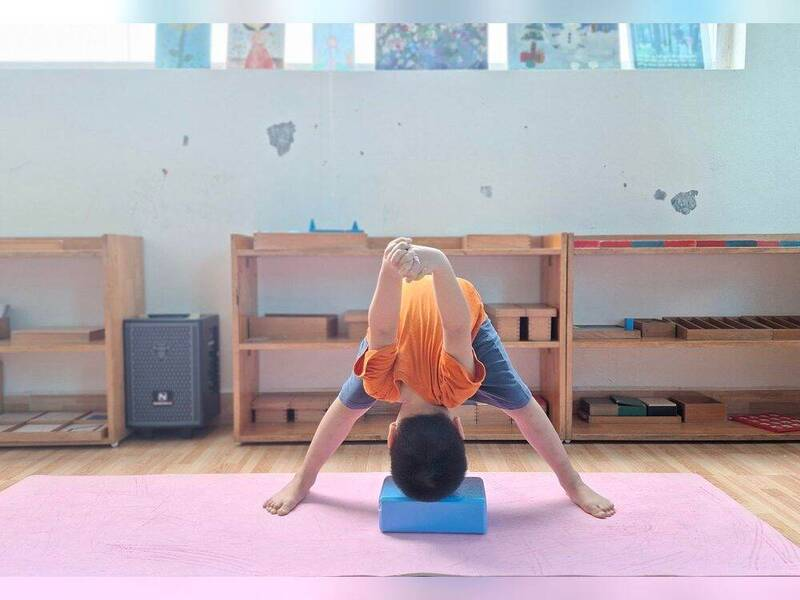
Kim tự tháp đội gạch
Wide-legged forward fold, head on block
Cách làm: Dang rộng hai chân, đan tay sau lưng, gập người xuống, hai tay đưa lên trời.
🧱 Dùng gạch: Gạch nằm giữa hai bàn chân để đỉnh đầu “đáp” nhẹ lên, bé không bị chóng mặt.
🗣️ “Kim tự tháp thật vững, đỉnh đầu chạm gạch nhẹ nhàng.”
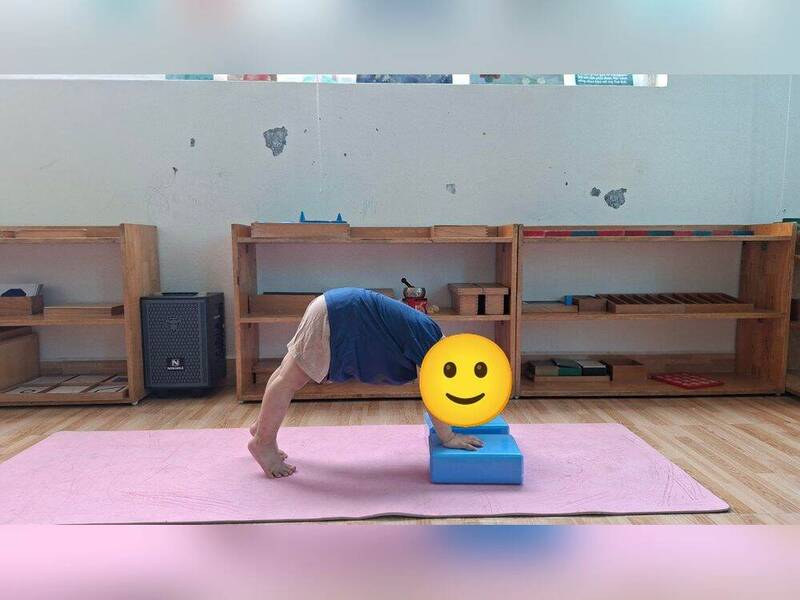
Chú chó vươn vai
Downward dog with blocks
Cách làm: Chống tay, đẩy mông lên cao, hai chân duỗi, người thành hình chữ V ngược.
🧱 Dùng gạch: Hai viên gạch nằm dưới hai bàn tay giúp vai đỡ mỏi, bé dễ đẩy mông lên cao hơn.
🗣️ “Gâu gâu! Chó con vươn vai thật dài.”
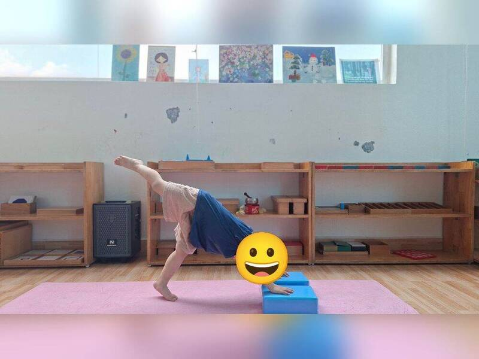
Chó con giơ chân
Three-legged dog with blocks
Cách làm: Từ tư thế chó vươn vai, nhấc một chân lên cao ra phía sau. Giữ 3 hơi thở rồi đổi chân.
🧱 Dùng gạch: Tay chống trên hai viên gạch chồng nhau để người không đổ về trước khi nhấc chân.
🗣️ “Chó con giơ chân chào các bạn!”
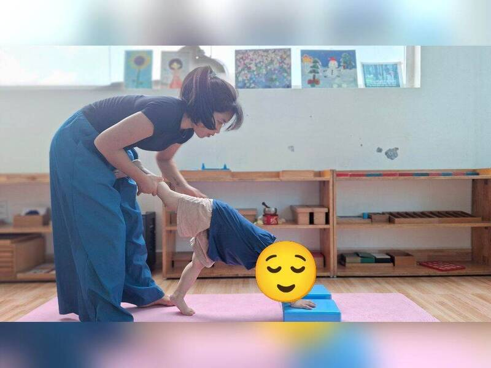
Xe cút kít cùng cô
Assisted dog, leg lift
Cách làm: Bé chống tay lên gạch như chó vươn vai. Cô đứng sau, nhẹ nhàng nâng một chân của bé lên.
🧱 Dùng gạch: Hai viên gạch chồng nhau giúp tay chống vững, bé không bị chúi đầu xuống thảm.
🗣️ “Xe cút kít chạy nào, tay đẩy thật chắc!”
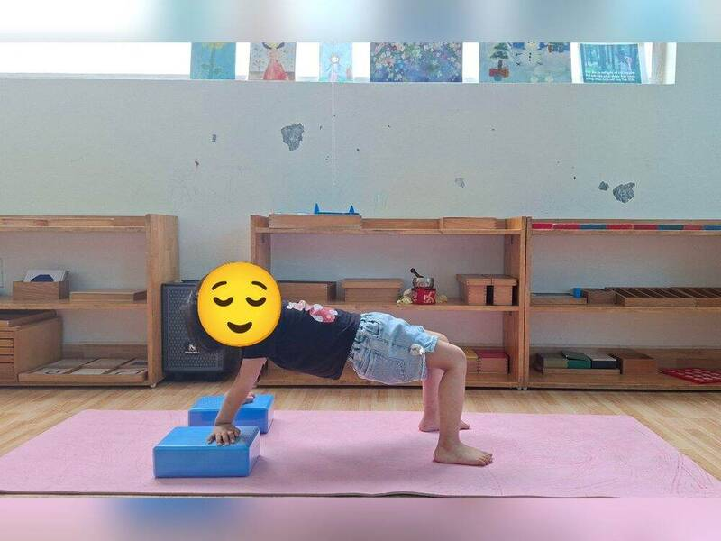
Cua ngửa bụng
Reverse tabletop with blocks
Cách làm: Ngồi, chống hai tay ra sau, nâng hông lên cao, bụng hướng lên trời, mắt nhìn trần nhà.
🧱 Dùng gạch: Hai viên gạch nằm dưới hai bàn tay giúp vai dễ mở và cổ tay đỡ mỏi.
🗣️ “Cua con ngửa bụng phơi nắng, ngang ngang ngang!”
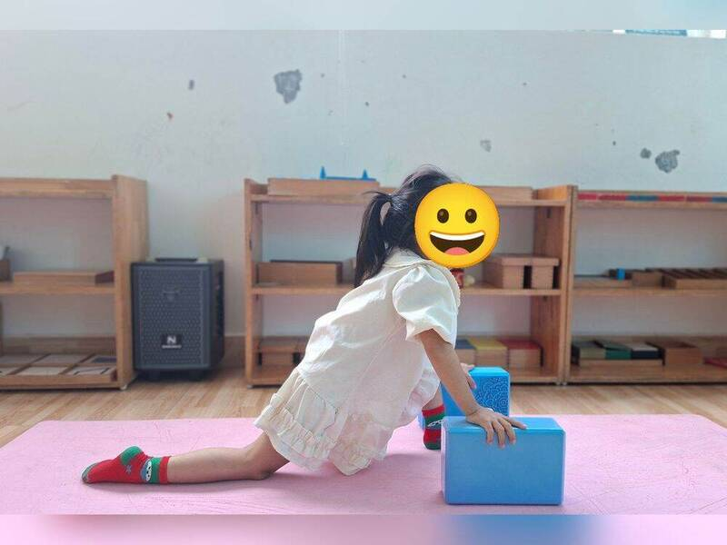
Ngựa con phi nước kiệu
Low lunge with blocks
Cách làm: Bước một chân lên trước, gối sau chạm thảm, hai tay chống lên gạch, ngực mở, mắt nhìn trước.
🧱 Dùng gạch: Hai viên gạch đứng hai bên bàn chân trước, giúp lưng thẳng, không gập người quá sâu.
🗣️ “Ngựa con phi nhanh, lưng thật thẳng!”
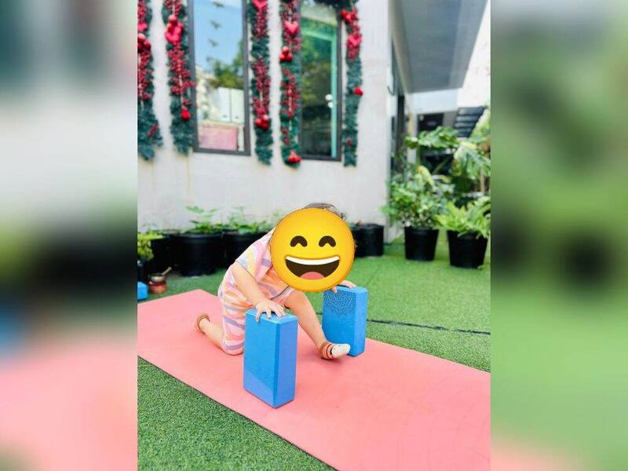
Vận động viên vào vạch
Runner's lunge with blocks
Cách làm: Quỳ một gối, chân kia bước rộng, hai tay đặt lên hai viên gạch như chuẩn bị xuất phát.
🧱 Dùng gạch: Gạch đứng dưới hai bàn tay, bé chưa dẻo vẫn giữ được lưng thẳng.
🗣️ “Chuẩn bị… sẵn sàng… chạy!”
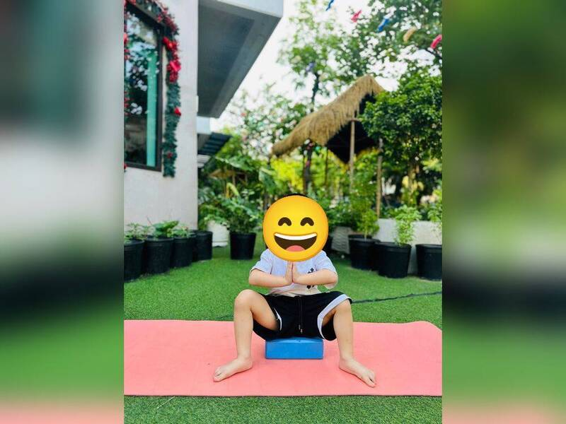
Ếch con ngồi đá
Garland pose on block
Cách làm: Ngồi xổm, hai chân mở rộng, chắp tay trước ngực, khuỷu tay đẩy nhẹ hai gối ra.
🧱 Dùng gạch: Bé ngồi lên một viên gạch nằm. Gót chân chạm thảm, lưng thẳng mà không bị ngã ra sau.
🗣️ “Ếch con ngồi trên hòn đá, ộp ộp!”
🦋 Phần 2: Ngồi, quỳ và gập người
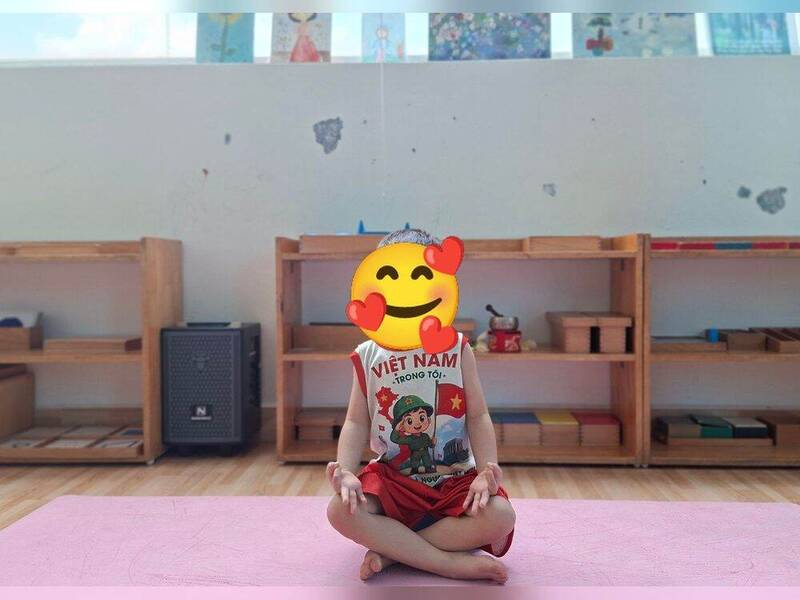
Hoa sen ngồi thiền
Easy pose, meditation
Cách làm: Ngồi xếp bằng, lưng thẳng, hai tay đặt trên gối, nhắm mắt thở thật chậm.
🧱 Dùng gạch: Ngồi lên mép một viên gạch nằm để hông cao hơn gối, lưng thẳng dễ dàng hơn.
🗣️ “Bông sen nở trên mặt hồ, thở vào thật chậm…”
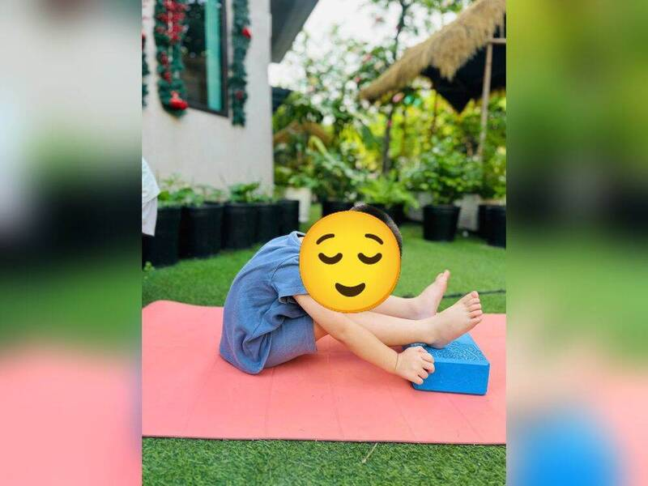
Rùa con vươn cổ
Seated forward fold, hands on block
Cách làm: Ngồi duỗi thẳng hai chân, gập người về trước, hai tay ôm lấy viên gạch ở bàn chân.
🧱 Dùng gạch: Gạch đứng áp vào lòng bàn chân. Bé nắm gạch thay vì cố kéo ngón chân.
🗣️ “Rùa con vươn cổ chạm tới bờ!”
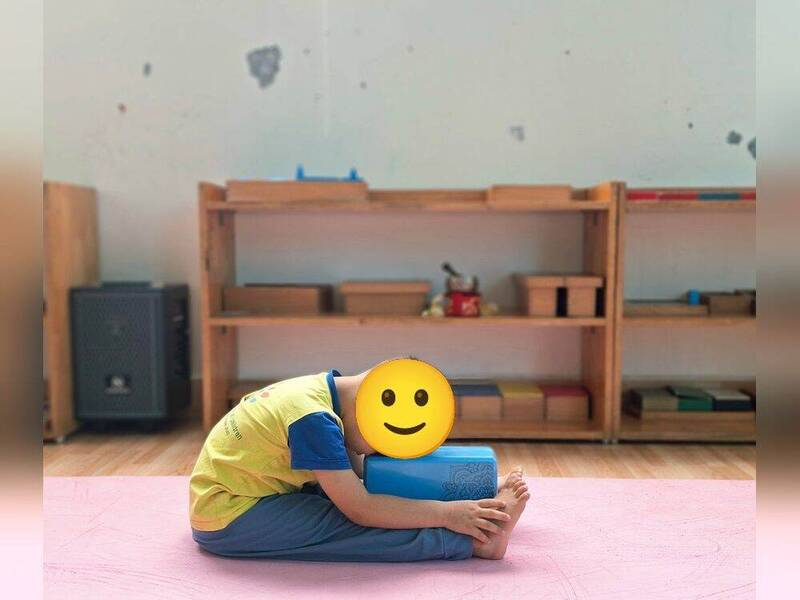
Sâu đo ngủ gật
Seated forward fold, head on block
Cách làm: Ngồi duỗi chân, gập người, trán tựa lên gạch, hai tay ôm lấy bàn chân.
🧱 Dùng gạch: Gạch nằm trên ống chân làm “gối”. Bé tựa đầu vào gạch nên cổ và lưng được thả lỏng.
🗣️ “Sâu đo mệt rồi, gục đầu ngủ một chút.”
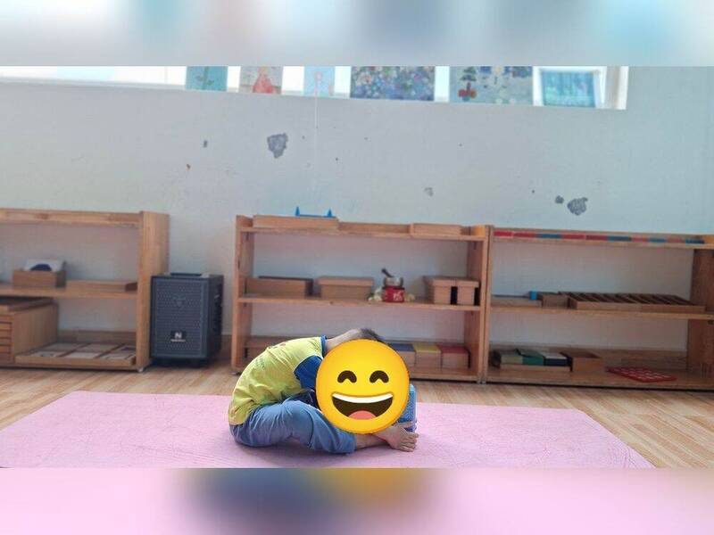
Gấp sách bí mật
Seated forward fold
Cách làm: Ngồi thẳng, hít vào vươn tay lên cao, thở ra gập người như gấp quyển sách lại, trán chạm gạch.
🧱 Dùng gạch: Bé cúi chưa sâu thì dùng gạch đứng, dẻo hơn thì đổi sang gạch nằm.
🗣️ “Gấp quyển sách thật nhẹ… bí mật nằm bên trong!”
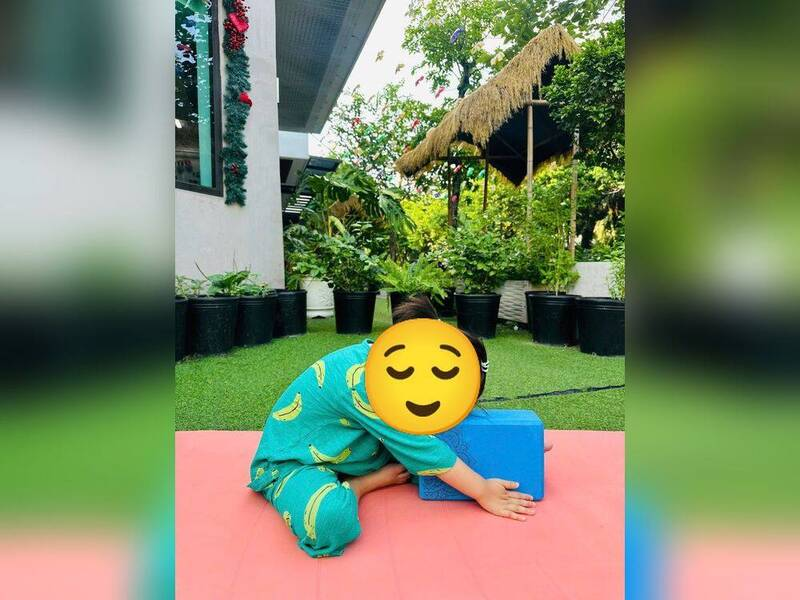
Bướm nghỉ trên hoa
Butterfly fold with block
Cách làm: Ngồi chụm hai lòng bàn chân, gối mở như đôi cánh bướm. Cúi người, trán tựa lên gạch.
🧱 Dùng gạch: Gạch đứng trước bàn chân để trán có chỗ tựa, bé thả lỏng lâu hơn.
🗣️ “Bướm xinh bay mỏi, đậu xuống nghỉ trên hoa.”
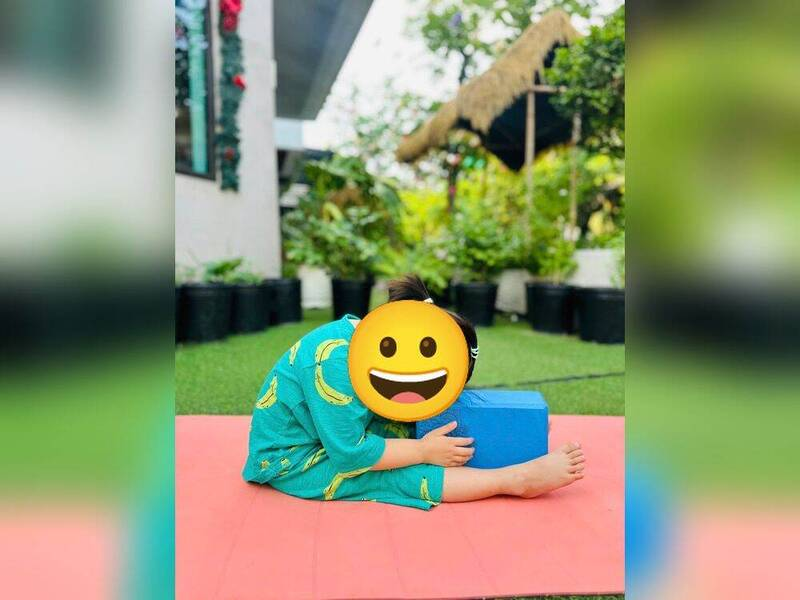
Chuối con ôm gối
Seated fold, hugging a block
Cách làm: Ngồi duỗi chân, ôm viên gạch đặt trên đùi, cúi người tựa đầu lên gạch.
🧱 Dùng gạch: Gạch nằm trên đùi làm “gối ôm”, bé cúi người mà không phải gồng.
🗣️ “Quả chuối nhỏ ôm gối ngủ trưa.”
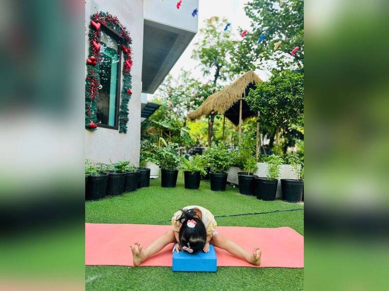
Quạt xòe gục đầu
Wide-legged seated fold
Cách làm: Ngồi dang rộng hai chân, cúi người về trước, trán tựa lên gạch, hai tay ôm gạch.
🧱 Dùng gạch: Gạch đứng giữa hai chân. Khi bé dẻo hơn thì đổi sang gạch nằm.
🗣️ “Chiếc quạt xòe rộng, gục đầu nghỉ mát.”
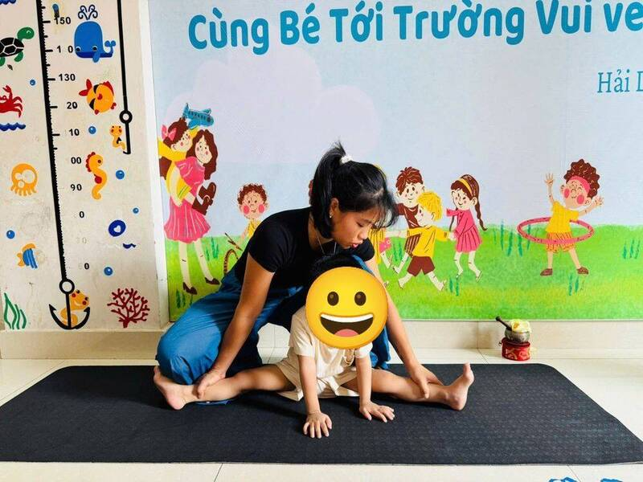
Chữ V mở cửa
Wide-legged seat, assisted
Cách làm: Ngồi dang chân thành chữ V, hai tay chống trước. Cô ngồi sau giữ nhẹ hai đầu gối để chân thẳng.
🧱 Dùng gạch: Đặt một viên gạch nằm phía trước để bé chống tay khi chưa cúi xuống được.
🗣️ “Cánh cửa chữ V mở ra thật rộng!”
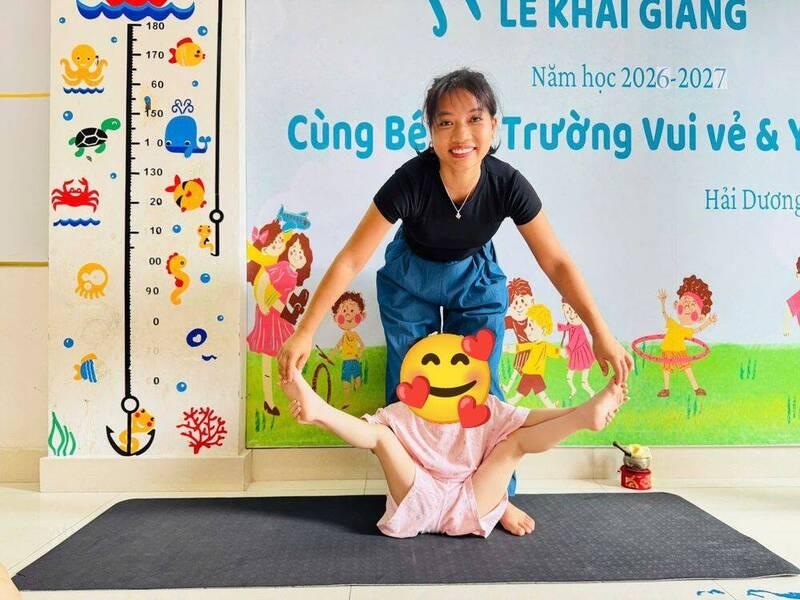
Thuyền buồm giương cánh
Open-leg boat, assisted
Cách làm: Ngồi, nâng hai chân dang rộng hình chữ V, giữ thăng bằng trên mông. Cô giữ cổ chân giúp bé.
🧱 Dùng gạch: Bé tự tập thì đặt hai viên gạch dưới hai bắp chân để nghỉ giữa các lần nâng chân.
🗣️ “Thuyền buồm giương cánh ra khơi!”
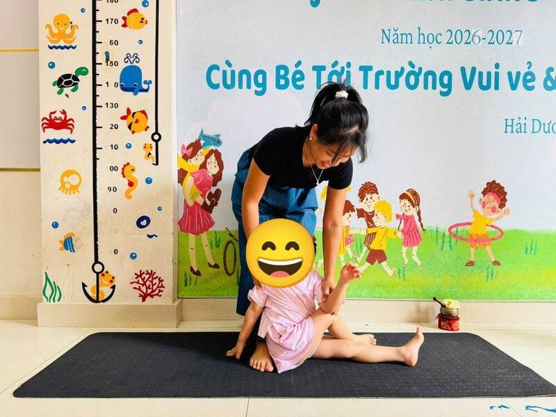
Cú mèo quay đầu
Seated twist, assisted
Cách làm: Ngồi duỗi một chân, chân kia co lại, xoay người nhìn ra sau. Cô giữ vai giúp lưng thẳng.
🧱 Dùng gạch: Ngồi lên một viên gạch nằm để lưng dài ra khi xoay.
🗣️ “Cú mèo quay đầu nhìn ai đó?”
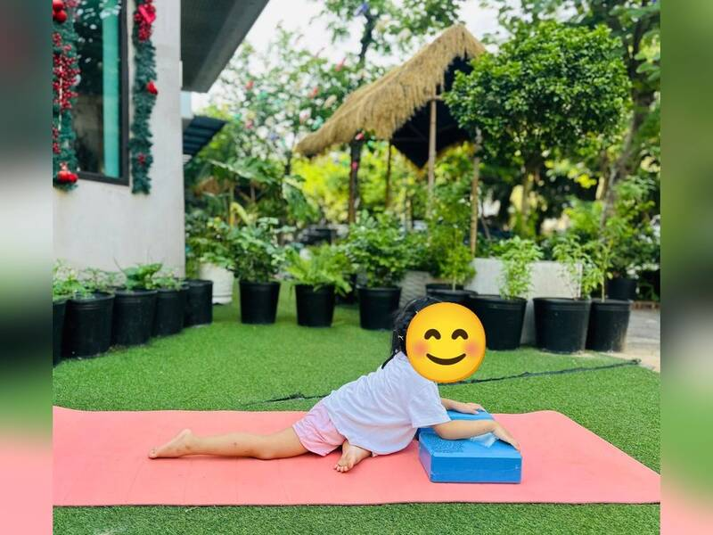
Bồ câu ôm gạch
Pigeon pose with block
Cách làm: Một chân gập trước, chân sau duỗi thẳng ra sau, cúi người, hai tay và ngực tựa lên gạch.
🧱 Dùng gạch: Gạch nằm trước gối để bé tựa tay, hông không bị đổ lệch.
🗣️ “Bồ câu cúi đầu chào, gừ gừ!”

Em bé chào mặt đất
Child's pose, arms forward
Cách làm: Quỳ ngồi trên gót, cúi người, trán chạm thảm, hai tay duỗi thẳng về trước.
🧱 Dùng gạch: Trán chưa chạm thảm thì kê một viên gạch nằm dưới trán.
🗣️ “Chào đất mẹ, cảm ơn đất mẹ!”
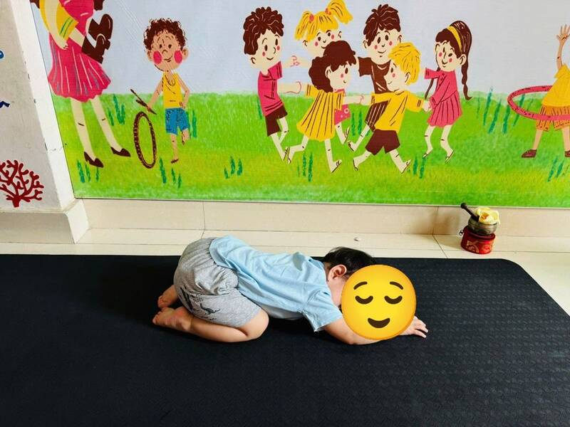
Hạt đậu ngủ say
Child's pose, resting
Cách làm: Cuộn tròn như hạt đậu, má áp xuống thảm, hai tay thả lỏng.
🧱 Dùng gạch: Kê gạch nằm dưới mông nếu bé đau gót hoặc đau gối.
🗣️ “Hạt đậu nhỏ ngủ ngon trong lòng đất.”
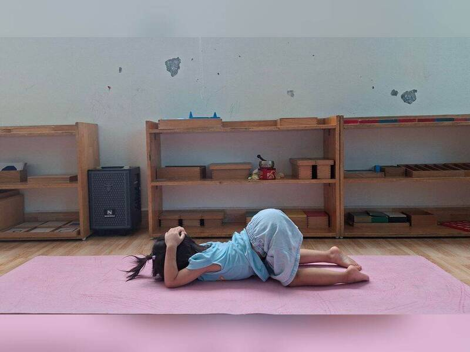
Rùa trốn vào mai
Child's pose, hands over head
Cách làm: Quỳ cúi người, hai tay ôm lấy đầu, như chú rùa rụt cổ vào mai.
🧱 Dùng gạch: Đặt một viên gạch nằm phía trước để bé “giấu” trán vào đó.
🗣️ “Có tiếng động! Rùa con trốn vào mai thôi!”
🐢 Phần 3: Nằm, thư giãn và cuộn tròn
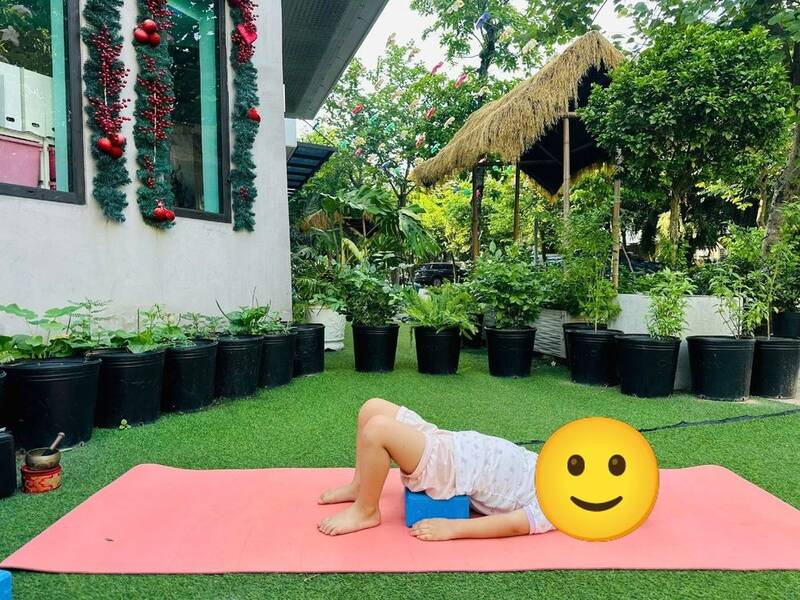
Cây cầu có trụ
Supported bridge
Cách làm: Nằm ngửa, co gối, nâng hông lên, đặt gạch dưới xương cùng rồi thả hông nằm lên gạch. Tay duỗi bên người.
🧱 Dùng gạch: Gạch nằm hoặc gạch nghiêng dưới hông. Bé được “nằm cầu” lâu mà không mỏi.
🗣️ “Cây cầu có trụ vững, xe qua thoải mái!”
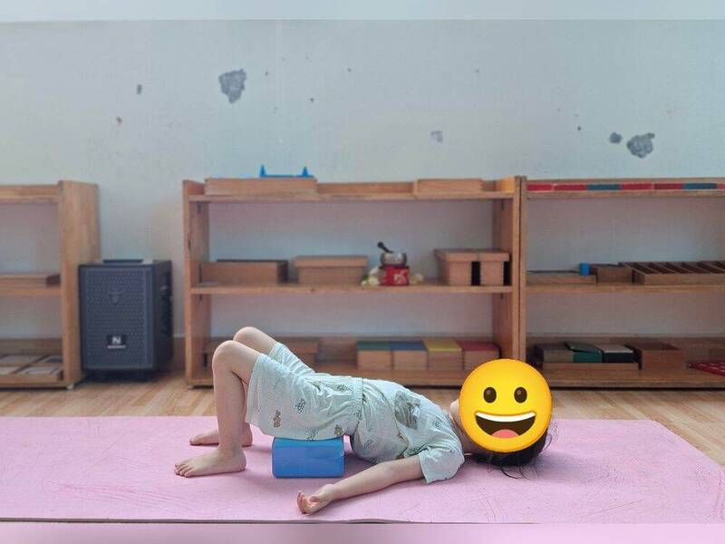
Cầu khỉ nghỉ chân
Supported bridge, resting
Cách làm: Nằm như cây cầu có trụ, giữ lâu 5 đến 8 hơi thở, mắt nhìn trần nhà, thở bằng bụng.
🧱 Dùng gạch: Gạch nằm dưới hông. Bé đặt tay lên bụng để thấy bụng phồng lên, xẹp xuống.
🗣️ “Cầu khỉ nghỉ chân, bụng phồng lên như bóng bay.”
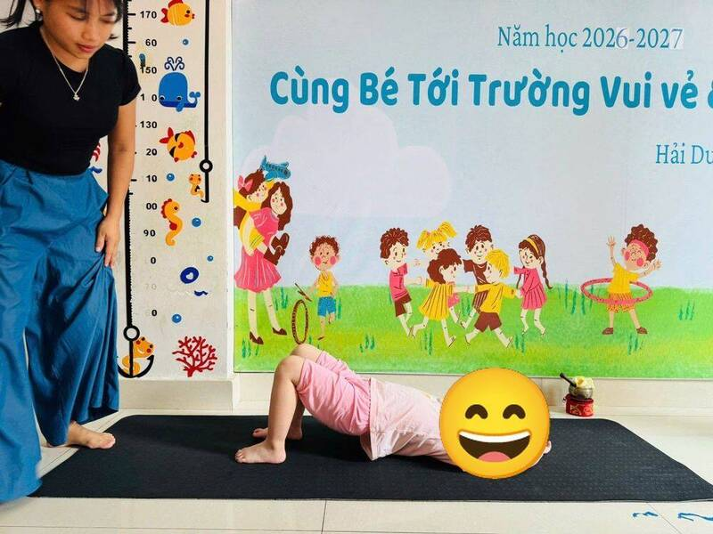
Cầu vồng sau mưa
Bridge pose
Cách làm: Nằm ngửa, co gối, bàn chân sát mông, đẩy hông lên thật cao, hai tay đặt sau đầu hoặc bên người.
🧱 Dùng gạch: Kẹp một viên gạch giữa hai đùi để hai gối không mở ra.
🗣️ “Cầu vồng hiện lên sau cơn mưa!”
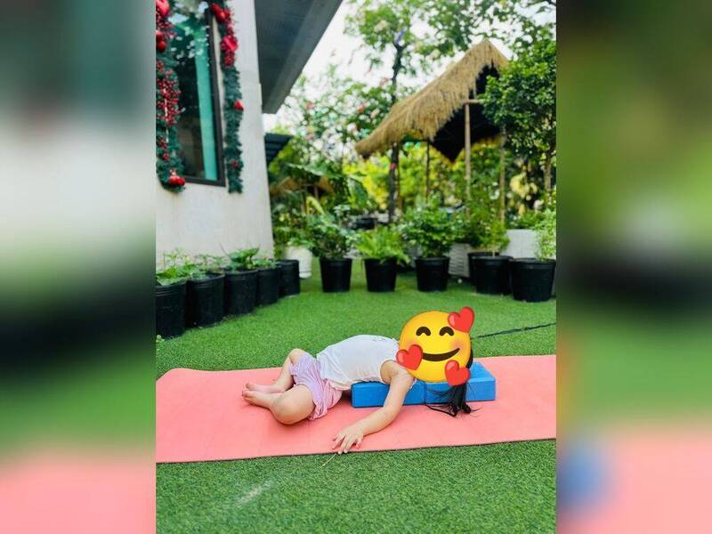
Công chúa ngủ trên gối
Supported reclined butterfly
Cách làm: Nằm ngửa trên gạch, hai lòng bàn chân chụm lại, gối mở sang hai bên.
🧱 Dùng gạch: Gạch nằm dọc dưới lưng ngang bả vai, thêm một viên dưới đầu nếu cổ bị ngửa nhiều.
🗣️ “Công chúa ngủ trong vườn hoa…”
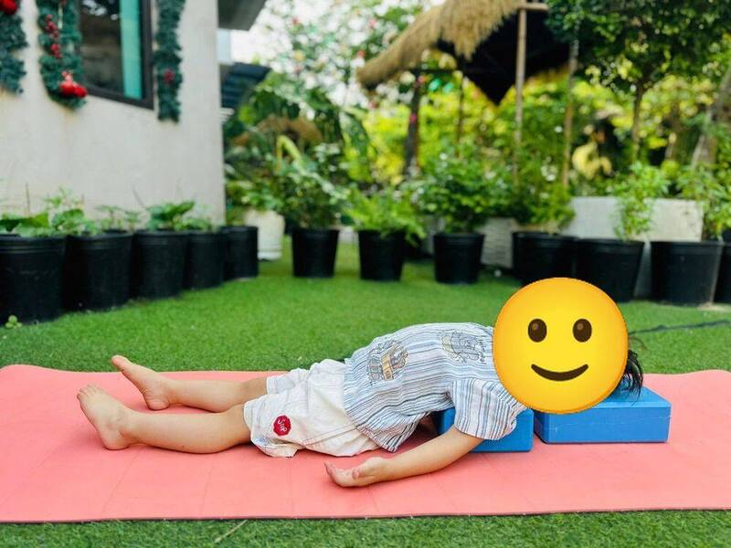
Thuyền nằm phơi nắng
Supported fish, two blocks
Cách làm: Nằm ngửa, một viên gạch dưới lưng trên, một viên dưới đầu, tay chân duỗi thả lỏng.
🧱 Dùng gạch: Gạch lưng để nằm thấp, gạch đầu để nghiêng cao hơn một chút.
🗣️ “Thuyền nằm phơi nắng trên bờ cát.”
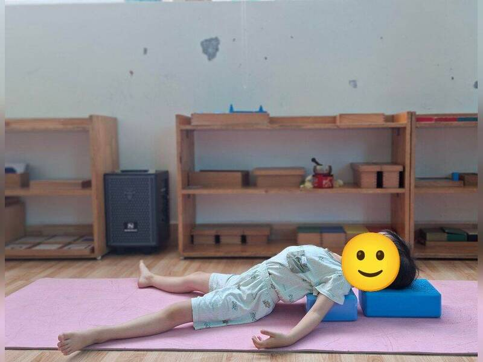
Cá heo ngửa bụng
Supported fish pose
Cách làm: Nằm như thuyền phơi nắng, hít vào thật sâu cho ngực phồng lên, thở ra chậm.
🧱 Dùng gạch: Hai viên gạch, viên thấp dưới lưng, viên cao dưới đầu. Ngực mở nên bé thở sâu hơn.
🗣️ “Cá heo ngửa bụng, hít một hơi thật căng!”
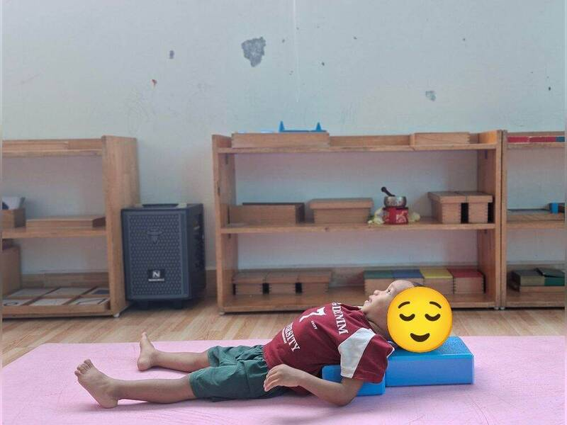
Cá voi phun nước
Supported fish, breathing
Cách làm: Nằm ngửa, gạch dưới lưng và đầu. Hít vào bằng mũi, thở ra bằng miệng “phù” như cá voi phun nước.
🧱 Dùng gạch: Gạch đặt nghiêng dưới lưng trên. Người lớn kiểm tra cổ bé không bị ngửa quá.
🗣️ “Cá voi hít vào… phù… phun nước lên trời!”
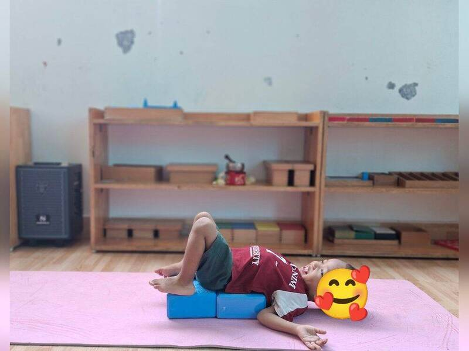
Rùa lật ngửa
Supported back rest, knees bent
Cách làm: Nằm ngửa trên hai viên gạch nối nhau, co hai gối, bàn chân đặt trên thảm, hai tay dang thả lỏng.
🧱 Dùng gạch: Gạch đặt dọc dưới lưng giúp ngực mở, lưng dưới được nghỉ.
🗣️ “Rùa lật ngửa rồi, nằm im ngắm trời nào!”

Bánh quẩy xoắn
Reclined twist
Cách làm: Nằm ngửa, co gối, thả hai gối sang một bên, quay đầu sang bên kia, tay dang ngang.
🧱 Dùng gạch: Gối chưa chạm thảm thì kê một viên gạch dưới gối.
🗣️ “Xoắn xoắn bánh quẩy, giòn tan nào!”
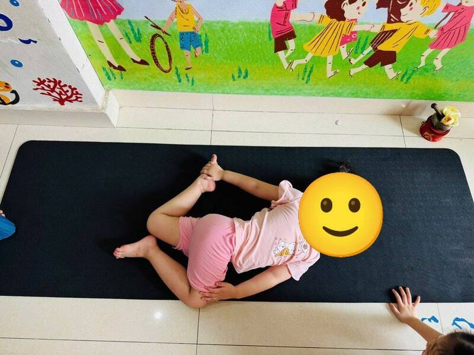
Nàng tiên cá vẫy đuôi
Reclined leg hold
Cách làm: Nằm nghiêng ngửa, một tay nắm bàn chân kéo nhẹ về phía vai, chân kia co.
🧱 Dùng gạch: Kê gạch dưới đầu để cổ thẳng khi bé vươn tay ra sau.
🗣️ “Nàng tiên cá vẫy đuôi dưới biển xanh!”
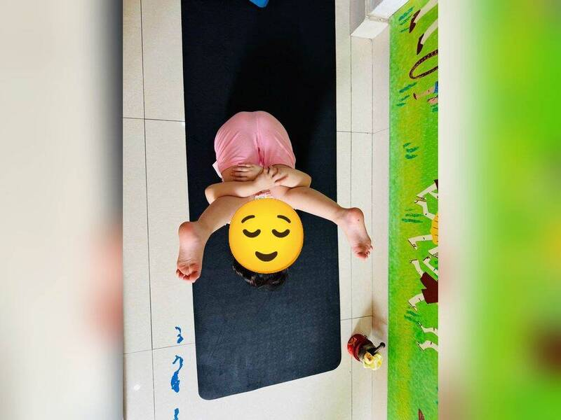
Em bé vui vẻ
Happy baby
Cách làm: Nằm ngửa, co gối về ngực, hai tay nắm hai bàn chân, lăn nhẹ sang hai bên.
🧱 Dùng gạch: Kê một viên gạch nằm dưới đầu nếu đầu bé bị ngửa ra sau.
🗣️ “Em bé vui vẻ lắc lư, khúc khích cười!”
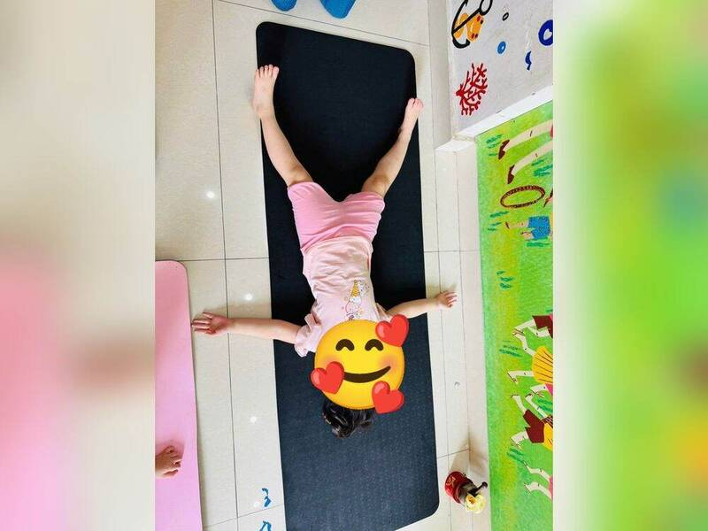
Sao biển nằm nghỉ
Starfish rest
Cách làm: Nằm ngửa dang tay chân như sao biển, nhắm mắt, thở chậm.
🧱 Dùng gạch: Kê gạch nằm dưới bắp chân để lưng dưới thả lỏng hơn.
🗣️ “Sao biển nằm nghỉ trên bãi cát.”
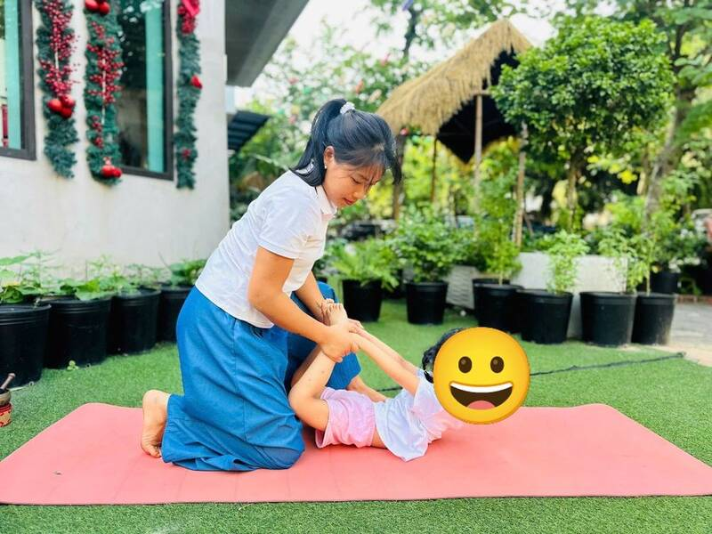
Chim én bay cao
Locust pose, assisted
Cách làm: Nằm sấp, hai tay đưa ra sau. Cô nắm tay bé, bé nâng ngực và chân lên như chim én.
🧱 Dùng gạch: Bé tự tập thì kẹp một viên gạch giữa hai bàn chân rồi nâng chân lên.
🗣️ “Chim én bay cao, bay qua mái nhà!”
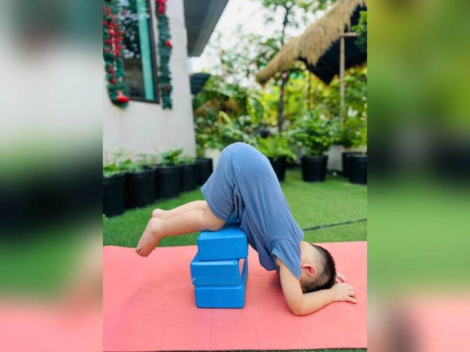
Cái cày lên dốc
Plow pose with blocks
Cách làm: Nằm ngửa, đưa hai chân qua đầu, mũi chân đặt lên chồng gạch, hai tay chống thảm.
🧱 Dùng gạch: Ba viên gạch chồng sau đầu để chân có chỗ đỡ, cổ không bị ép. Bé trên 5 tuổi, có cô bên cạnh.
🗣️ “Cái cày đi lên dốc, chậm thôi nào!”
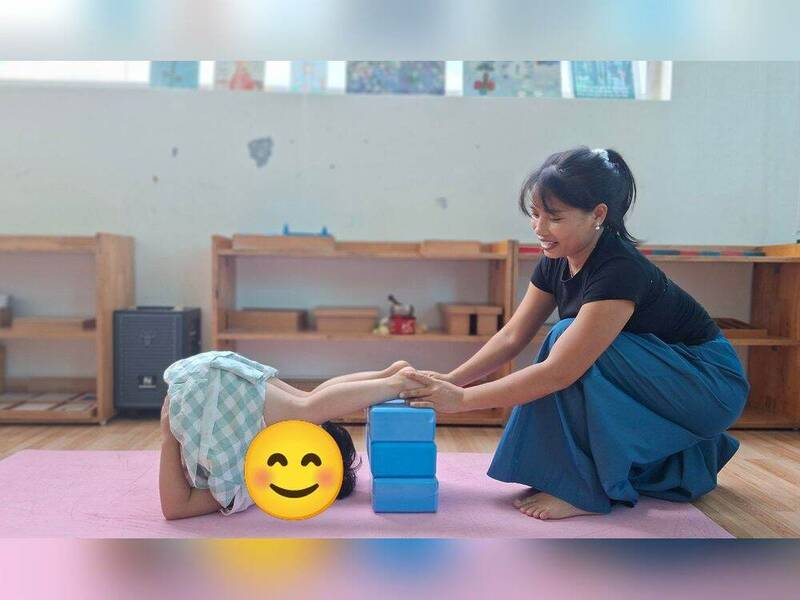
Cái cày có cô giúp
Plow pose, assisted
Cách làm: Như cái cày lên dốc. Cô ngồi đối diện, giữ hai bàn chân bé trên chồng gạch.
🧱 Dùng gạch: Chồng gạch cao vừa bằng tầm chân bé. Bé thấy mỏi cổ thì lăn ra nằm ngay.
🗣️ “Cô giữ chân rồi, cái cày thật vững!”
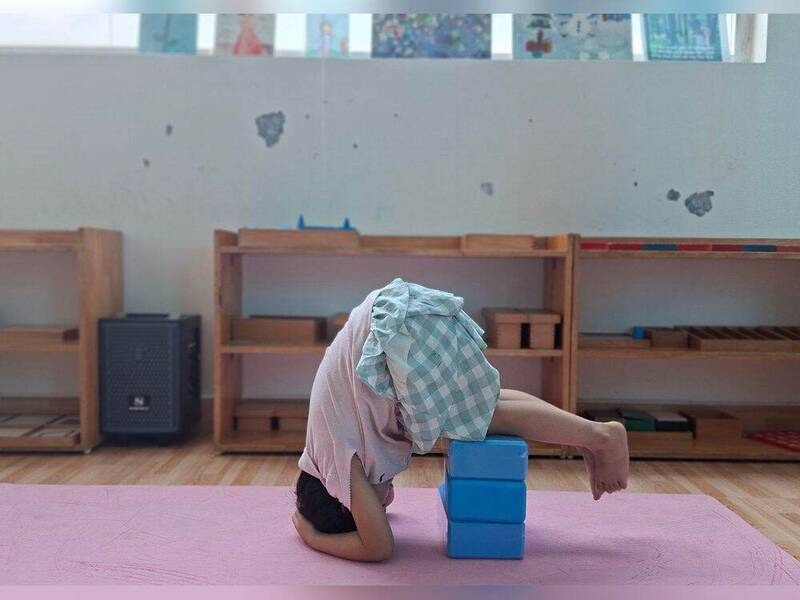
Ốc sên chui vào vỏ
Knee-to-ear pose on blocks
Cách làm: Từ cái cày, gập gối gác lên chồng gạch, đầu và vai nằm trên thảm như ốc sên trốn vào vỏ.
🧱 Dùng gạch: Ba viên gạch chồng nhau đỡ đầu gối. Giữ 3 hơi thở rồi lăn ra từ từ.
🗣️ “Ốc sên chui vào vỏ, im lặng nào…”
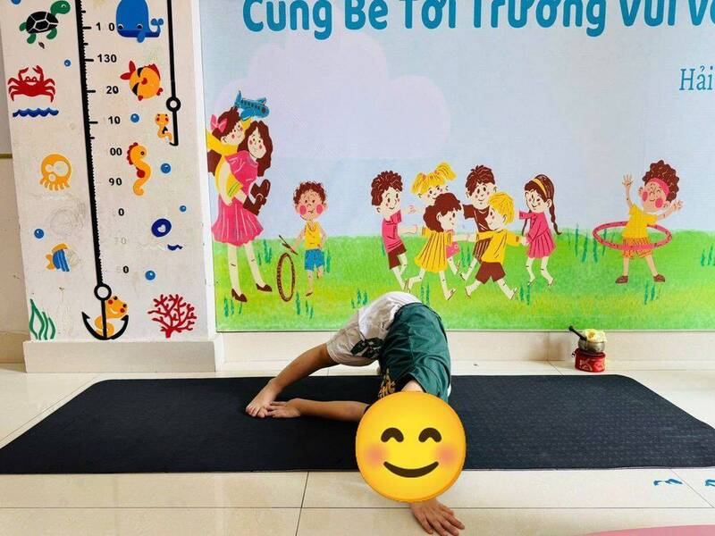
Đà điểu giấu đầu
Plow variation
Cách làm: Nằm ngửa rồi lăn hai chân qua đầu, hai tay chống thảm giữ thăng bằng.
🧱 Dùng gạch: Bé mới tập thì đặt gạch sau đầu để mũi chân chạm gạch, không phải chạm thảm.
🗣️ “Đà điểu giấu đầu, ai tìm thấy không?”
🤸 Phần 4: Yoga đôi cùng cô
Ba tư thế bay cùng cô là phần thưởng cuối buổi. Chỉ người lớn đã được hướng dẫn mới nâng bé, luôn có thảm dày bên dưới và tập chậm.
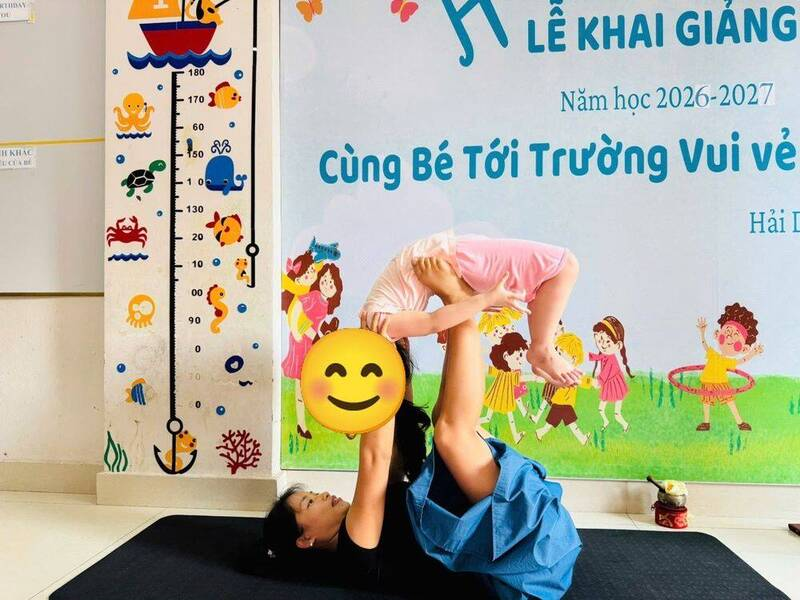
Máy bay trên đôi chân
Partner front bird
Cách làm: Cô nằm ngửa, hai bàn chân đặt ở hông bé, hai tay nắm tay bé. Bé duỗi thẳng người như máy bay bay ngang.
🧱 Dùng gạch: Khởi động trước bằng “Cua ngửa bụng” và “Chó vươn vai” trên gạch để tay và bụng bé đủ khỏe.
🗣️ “Máy bay bay cao, bay qua cầu vồng!”
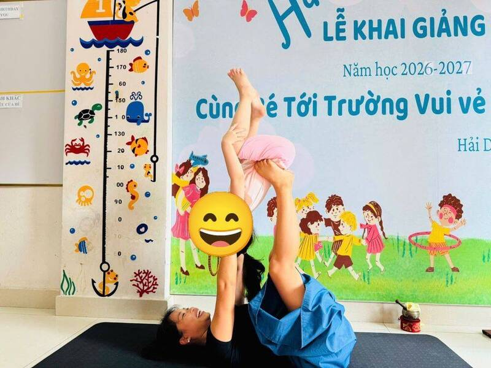
Dơi con treo ngược
Partner fold
Cách làm: Cô nằm ngửa nâng bé lên bằng chân, bé gập người, hai chân hướng lên trời như chú dơi treo ngược.
🧱 Dùng gạch: Chỉ làm khi bé đã quen tư thế “Cái cày” trên gạch và có người lớn thứ hai đứng cạnh.
🗣️ “Dơi con treo ngược ngủ ngày!”
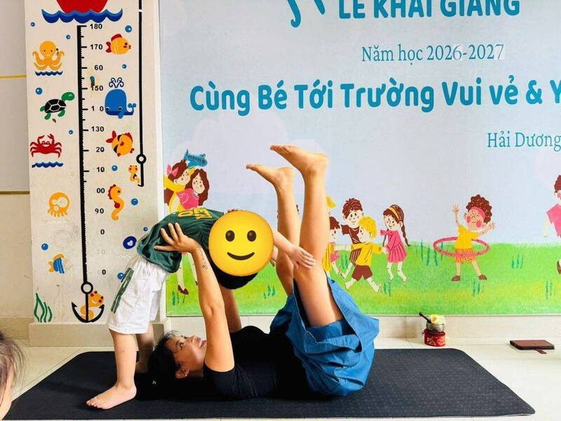
Siêu nhân bay ngửa
Partner back bird
Cách làm: Cô nằm ngửa, hai chân và hai tay đỡ lưng bé. Bé ngả lưng ra sau, dang tay như siêu nhân.
🧱 Dùng gạch: Khởi động trước bằng “Cây cầu có trụ” trên gạch để lưng bé mềm ra.
🗣️ “Siêu nhân bay ngửa, nhìn thấy cả bầu trời!”
🎲 3 trò chơi vui với gạch yoga
🪨 Bước đá qua suối
Xếp 5 đến 6 viên gạch nằm thành đường đi. Bé bước từng viên “qua suối” mà không chạm nước. Tập thăng bằng và tập trung.
👑 Vương miện thần kỳ
Đặt gạch lên đầu bé, bé đi chậm hoặc làm tư thế cây mà không làm rơi “vương miện”. Bé đứng thẳng lưng tự nhiên.
🏰 Xây tháp thở
Mỗi lần bé thở ra thật dài thì được chồng thêm một viên gạch. Cả lớp cùng xây tháp, bé dịu lại sau phần vận động.
Lưu ý an toàn
- Bé chỉ đứng lên gạch khi có người lớn đứng sát bên. Không cho bé nhảy từ trên gạch xuống. Chồng gạch càng cao thì càng cần cô nắm tay.
- Các tư thế cái cày, ốc sên và yoga đôi chỉ tập khi bé đã khỏe, có cô bên cạnh, và dừng ngay khi bé mỏi cổ.
- Đặt gạch trên thảm chống trơn, kiểm tra gạch không bị trượt trước khi bé chống tay.
- Gạch là để hỗ trợ, không phải “bài kiểm tra”. Bé nào không cần gạch thì cứ tập tự do.
- Không có gạch? Dùng chồng sách dày bọc khăn, hoặc gối cứng nhỏ cũng được.
Xem thêm Bộ 43 tư thế yoga cho bé (không cần dụng cụ). Muốn học cách dùng dụng cụ và dạy lớp yoga trẻ em bài bản? Tham gia khóa Đào tạo HLV Yoga trẻ em cùng cô Sophia, hoặc nhắn Zalo 0349 270 304.